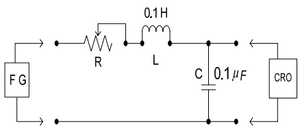
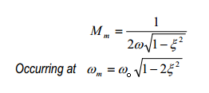
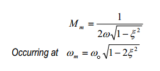

Pre Quiz
Test Your Knowledge!!

Theory
Objective: Experimental verification of frequency response of R-L-C series Circuit.
Series RLC circuits consist of a resistance, a capacitance and an inductance connected in series across an alternating supply.
Series RLC circuits are classed as second-order circuits because they contain two energy storage elements, an inductance L and a capacitance C. Consider the RLC circuit below.
In this experiment a circuit(Fig 1) will be provided. A p-p sinusoidal signal of amplitude 3V will be applied to it and its frequency response would be verified
.

[Fig 1:Circuit diagram]
The above R, L, C series circuit forms a second order system.The transfer function of this circuit is given by,

The gain and phase response against frequency will be typical of second order system. The expected maximum gain for each ζ can be observed from the plot in the experiment. Theoretical expression for obtaining maximum gain is,

The gain and phase response against frequency will be typical of second order system. The expected maximum gain for each ζ can be observed from the plot in the experiment. Theoretical expression for obtaining maximum gain is,


Procedure
- Connect the circuit elements as mentioned below 1-3 ,4-5 ,8-6, 6-10, 9-11, 2-7, 7-9(ex:-Drag from 1 and click on 3.)
- 3 volt p-p sinusoidal voltage is applied at the input.Put R=100Ω ,L=0.1H, C=0.1uF.
- Switch on the oscilloscope by clicking "ON" button & click twice the Sine wave button for input signal & click on the"Output" button to observe the output.Channel & Channel2 button shows the input & output signals respectively. Dual, shows both of them.
- Change the Frequency of input signal by the Frequency knob from 100Hz to 5KHz & observe the corresponding output voltage signal.
- Switch off the oscilloscope
- Click on Tableshow button each time after clicking on "output" button to see observation each time.
- Click on 'GainPlot' button to see the frequency response plot(Gain(dB)vs.Frequency(Hz))& click on the 'Phaseplot'button to see the corresponding phase response.Click on Clear button to clear datas.
- Switch off the oscilloscope.Observe different results for different values of ζ (0.1,0.2,0.3,0.5,0.7).
- From the Gain plots the maximum gain,-3dB frequency can be observed for different ζ .

Operating Environment
Minimum System Requirement:
- A standard PC running Microsoft Windows XP, Windows Vista.
- 512MB RAM and 500 MB of available hard-disk space is recommended
- 1024x768 or higher screen resolution;
- a mouse or other pointing device
- A CD-ROM drive

Simulator
Pre-Requisite to run the Simulator:
Link to the simulator:
The simulator for this experiment is designed based on JavaScript platform combined with HTML5 Canvas for graphics. So the users are recommended to use browsers with HTML5 compatible.
Link to the simulator:
Click here to perform the Experiment
Quiz
Test Your Knowledge!!

Reference
A) Book Name:
1)Electronic Devices & Circuits by J.B Gupta
NPTEL PDFB) Video Lecture:
Click here for NPTEL Video Lecture